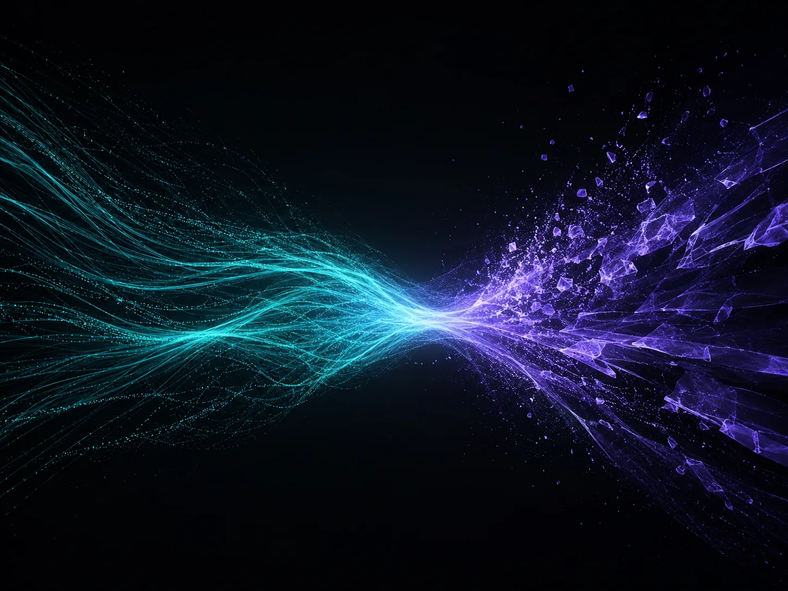
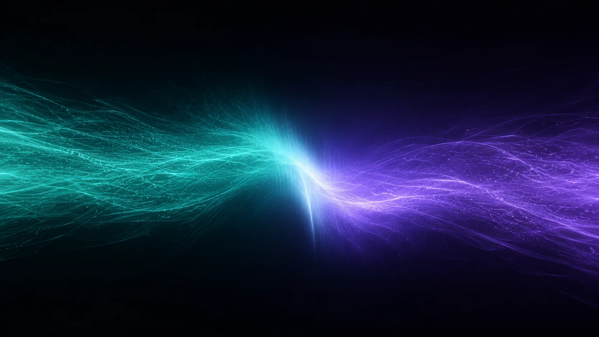

Why multimodal
리뷰엔 글만 있는 게 아닙니다
온라인 쇼핑 리뷰에는 글과 사진이 함께 담깁니다. 옷과 전자제품은 특히 색감, 디자인, 실물 느낌 같은 시각 정보가 구매 판단에 큰 영향을 줍니다.
VITAL-Rec은 텍스트와 이미지를 함께 읽어 사용자가 매길 별점을 더 안정적으로 예측하는 것을 목표로 합니다.

Model structure
사용자와 상품, 두 관점을 같은 구조로
사용자 관점과 상품 관점을 각각 타워로 만들고, 각 타워가 ID 정보, 텍스트, 이미지를 함께 받습니다.

기술 더보기
텍스트는 RoBERTa-base, 이미지는 ViT-base로 의미 표현을 추출합니다. 두 타워 표현은 원소곱, 절대차, ID 기반 협업 신호로 결합한 뒤 residual MLP와 선형 회귀 헤드를 거쳐 별점을 예측합니다.
Gated modal fusion
글이 중요한 리뷰, 사진이 중요한 리뷰
단순히 평균을 내거나 이어붙이는 대신, VITAL-Rec은 샘플마다 텍스트와 이미지의 비중을 학습합니다.
gate = σ(W·[text ; image])fused = gate ⊙ text + (1 − gate) ⊙ image
Performance
기존 최강 모델보다 더 정확하게
실제 아마존 의류·전자제품 데이터에서 VITAL-Rec은 가장 강한 기존 멀티모달 모델보다 오차를 더 낮췄습니다. 낮을수록 좋습니다.
Ablation Study
각 요소가 정말 필요한지 확인했습니다
이미지를 빼거나 융합 방식을 단순화하면 오차가 커집니다. 즉 사진을 함께 쓰는 것과 똑똑하게 합치는 게이트 융합이 모두 중요합니다.
Team
팀 소개
역할별로 프로젝트 총괄, 모델 설계, 실험, 데이터 분석과 결과 시각화를 나누어 진행했습니다.